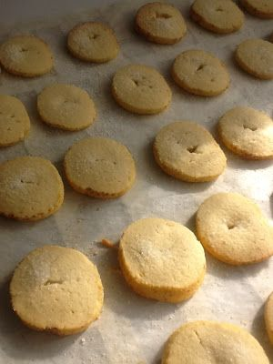

Menu para la semana - Recetas y Postres - Y hoy qué comemos
 Saltar al contenido
Recetas de Cocina Fácil y Casera Y hoy que comemos
Recetas de Cocina Fácil y Casera para toda la familia y económicas. Preparación paso a paso, con vídeos y fotos.Recetas de Cocina Fácil y Casera Y hoy que comemos
Recetas Acompañamientos y guarniciones Aperitivos y entrantes Arroces Bocatas y sandwichs Carnes y Aves Ensaladas Entrevistas Guisos Huevos Legumbres Light Masas y Panes Menús semanales Monsieur Cuisine My Cook Touch Navidad Para niños Pastas Pescados y Mariscos Pollo Recetas con Yogur Recetas para Fiestas Salsas y aliños Semana Santa y Cuaresma Sopas y Cremas Tartas y Bizcochos Veganas Vegetariano Verduras Viajes gastronómicas Y hoy qué comen nuestros seguidores Dulces Batidos Bizcochos Chocolate Flanes y pudines Frutas Galletas Mermeladas Tartas Tartas de queso Vídeos Canal YouTube Recetas de «Y hoy qué comemos» Cana YouTube «Recetas Fáciles de Irene» Medidas Podcast Gratis Regalos Tienda Utensilios y productos Sobre mí Quiénes Somos Podcast – Y hoy qué comemos Participa en la Comunidad Prensa Opiniones Eventos Contacto Otros Envía tu Receta Y hoy qué comen nuestros seguidores Diccionario Culinario Ideas, Consejos y Trucos Menús semanales Nutrición y Salud: Composición de los alimentos Preguntas FrecuentesMenu para la semana
Hoy te traigo ideas de comidas y cenas para esta semana. Ya terminaron las Navidades y con ellas los excesos de comidas. Esta semana os dejo un menú sencillo, completo y económico para que la cuesta de enero se haga más llevadera.
PARA VER CADA RECETA PASO A PASO HAZ CLICK EN LA FOTO
Resumen de contenidos
1 PARA VER CADA RECETA PASO A PASO HAZ CLICK EN LA FOTO 2 LUNES 2.1 Para el almuerzo 3 MACARRONES CON ATÚN 3.1 Para la cena 4 ENSALADA CÉSAR 5 MARTES 5.1 Para el almuerzo 6 LENTEJAS CON PUERROS 6.1 Para la cena 7 ALIÑO DE PESCADO 8 MIÉRCOLES 8.1 Para el almuerzo 9 POLLO AL AJILLO GUISADO 9.1 Para la cena 10 PASTEL SALADO 11 JUEVES 11.1 Para el almuerzo 12 POTAJE DE GARBANZOS CON ALCACHOFAS Y ALMEJAS 12.1 Para la cena 13 PANINIS CASEROS DE JAMÓN Y QUESO 14 VIERNES 14.1 Para el almuerzo 15 FIDEOS A LA MARINERA 15.1 Para la cena 16 TORTILLA DE CALABACÍN 17 SÁBADO 17.1 Para el almuerzo 18 CARRILLADA DE TERNERA EN SALSA 18.1 Para la cena 19 HUEVOS RELLENOS DE ATÚN 20 DOMINGO 20.1 Para el almuerzo 20.2 Para la cena 21 ENSALADA DE MANZANA, PIÑA Y QUESO FRESCO 22 Quieres formar parte del club de los comilones? Síguenos en nuestra página de Facebook y te mantendremos y te enviaremos todos los días nuestras nuevas recetas. Haz CLIC AQUÍ para ver las recetas. 22.1 HAZ CLIC EN EL BOTÓN PARA SUSCRIBIRTE A MI CANAL DE YOUTUBE:
LUNES
Para el almuerzo
MACARRONES CON ATÚN
Mira que son fáciles los macarrones con atún , pues más me gusta! Es uno de mis platos favoritos y además muy económico.
Para la cena
ENSALADA CÉSAR
La Ensalada césar es un plato muy conocido que se prepara con lechuga romana, pollo, trocitos de pan tostado y queso parmesano.
MARTES
Para el almuerzo
LENTEJAS CON PUERROS
Este Guiso de Lentejas con Puerros se hace prácticamente solo y el toque de verduras queda genial.
Para la cena
ALIÑO DE PESCADO
El Aliño de pescado es una receta estupenda para un menú light o de dietas. Se prepara de forma fácil y rápida.
MIÉRCOLES
Para el almuerzo
POLLO AL AJILLO GUISADO
Este Pollo al ajillo guisado es una receta elaborada de mi madre. El otro día le salió tan rico que no pude evitar la tentación de hacerle una foto para compartirlo con vosotros. Espero que os guste y que guardéis bien la receta. Es un guiso fácil y rico, como siempre 🙂
Para la cena
PASTEL SALADO
El Pastel Salado lo puedes preparar para una cena informal y creativa. Está hecho con pan de molde y melva y se prepara en un rato, no te quitará nada de tiempo. Es para esos días en los que no tienes muchas ganas de entretenerte.
JUEVES
Para el almuerzo
POTAJE DE GARBANZOS CON ALCACHOFAS Y ALMEJAS
Nos encantan los platos de cuchara como este Potaje de garbanzos con alcachofas y almejas. Un plato muy completo y sano que puedes comer todo el año.
Para la cena
PANINIS CASEROS DE JAMÓN Y QUESO
Los Paninis Caseros de Jamón y Queso o Bocapizza son como unas pizzas preparadas con pan. Puedes usar cualquier tipo de pan: tipo chapata, mollete, baguette…y echarle los ingredientes como si de una pizza se tratara, así que puedes echar rienda suelta a tu imaginación.
VIERNES
Para el almuerzo
FIDEOS A LA MARINERA
Los Fideos a la Marinera son un plato sano y nutritivo que puedes preparar para toda la familia.
Para la cena
TORTILLA DE CALABACÍN
Una receta sencilla, sana y fácil de elaborar. Buenísima!!
SÁBADO
Para el almuerzo
CARRILLADA DE TERNERA EN SALSA
La Carrillada de Ternera en Salsa en ola exprés la prepararás fácilmente y te quedará espectacular.
Para la cena
HUEVOS RELLENOS DE ATÚN
Cada uno tiene una manera de hacer esta receta. Hoy te traigo estos Huevos Rellenos de Atún para elaborar como receta en muy poco tiempo.
DOMINGO
Para el almuerzo
Tierra y mar, llamaba mi abuela a este plato que viene a ser arroz con verduras y gambas . Un plato muy sencillo y delicioso, para un buen domingo familiar.
Para la cena
ENSALADA DE MANZANA, PIÑA Y QUESO FRESCO
Apunta bien la receta que te voy a explicar cómo se hace aunque sea muy fácil de preparar. Y te puede servir para esos días en los que no te apetece comer demasiado y quieres algo más ligero.
Quieres formar parte del club de los comilones? Síguenos en nuestra página de Facebook y te mantendremos y te enviaremos todos los días nuestras nuevas recetas. Haz CLIC AQUÍ para ver las recetas.
Si tienes alguna duda, consulta o simplemente quieres expresar tu opinión, déjanos un comentario. No te quitará nada de tiempo y podrás contarnos lo que quieras. Estaremos encantados de charlar un ratico contigo. Deja un comentario un poco más abajo
Si te gustan los vídeos de recetas, puedes suscribirte a mi canal y te pondremos al día de las vídeo-recetas nuevas que vayamos subiendo.
HAZ CLIC EN EL BOTÓN PARA SUSCRIBIRTE A MI CANAL DE YOUTUBE:
¿Te ha gustado esta receta? Ayúdame votándola (Votos: 0 Promedio: 0 ) ← 4 Recetas de paté fáciles 0 (0) Pechuga de pollo al Brandy facil 0 (0)
6 comentarios en “Menu para la semana 0 (0) ”
Carmen dice: 6 agosto, 2018 a las 07:28Muy acertada, la idea, de cocinar por semanas.
Responder Y hoy Qué comemos dice: 6 agosto, 2018 a las 14:06Muchas gracias Carmen! Me alegra que te haya gustado. Un saludo
Responder Granada dice: 7 febrero, 2019 a las 23:10Gracias por las recetas, me alludan mucho
Responder Y hoy Qué comemos dice: 8 febrero, 2019 a las 11:02Muchas gracias Granada!! Me encanta que te sean de ayuda! Un abrazo
Responder Mari dice: 30 abril, 2019 a las 02:13Buenos días, me encantan las recetas de esta página, quisiera me mandarais por e mail recetas y eso de menú semanal me ayuda mucho también, si me podriais mandar todas las semanas los menus del día a día, osea el menú semanal. Un saludo.
Responder Y hoy Qué comemos dice: 30 abril, 2019 a las 10:35Hola Mari!! Claro que si, estaremos encantadas de enviarte las nuevas recetas que vayamos subiendo al blog y al canal de Youtube, gracias por seguirnos, nos encanta que te gusten nuestras recetas, un saludo
ResponderDeja una respuesta Cancelar la respuesta
Buscar aquí
Déjame tu correo y te enviaré mi Libro GRATUITO « Las mejores 20 recetas Saladas y Dulces» :